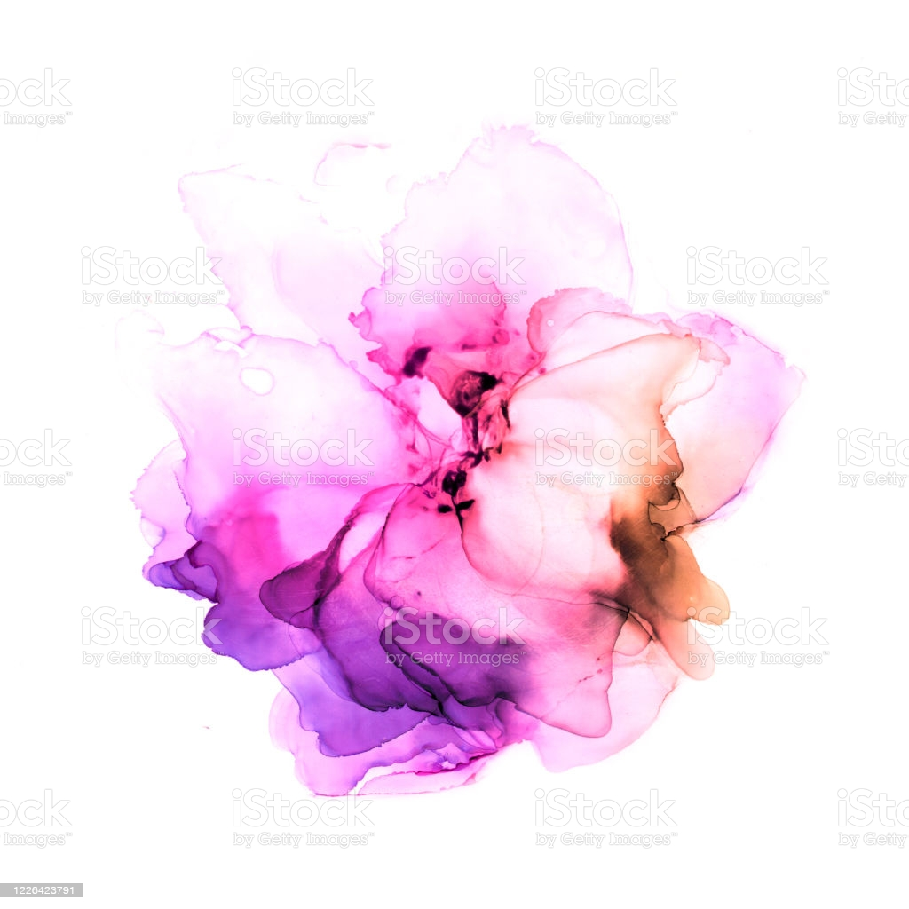

Painting with Watercolors
Washing Techniques:
Wet washing, dry washing, and back washing are a few examples
Washed Inked:
Waterproof ink is applied, allowed to almost dry, then scrubbed off. This will produce interesting textures and shapes. The results are unpredictable and permanent, so this technique is best used before watercolor washes are added. Best results are obtained using a spray bottle of water and rough bristle brush to scrub the ink back.
Blooms:
Watercolor blooms are created by layering wet paint
Other Techniques:
Layering, feathering, and scumbling can create depth and texture